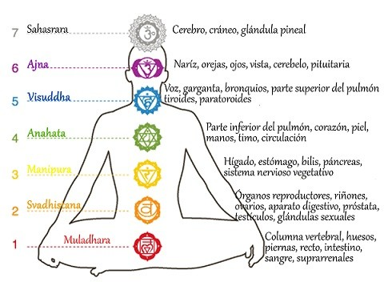

Somos un oasis de bienestar y equilibrio, dedicados a cuidar tu mente, cuerpo y espíritu. En Lotos Blancos, te ofrecemos una experiencia de terapia holística que te ayudará a encontrar la armonía y la paz interior que buscas.
¡Bienvenido/a a Lotos Blancos!
Nuestra mision
En Lotos Blancos, creemos en el poder de la terapia holística para transformar vidas. Nuestra misión es guiarte en tu viaje hacia el bienestar integral, ayudándote a alcanzar tu máximo potencial y encontrar la paz interior que tanto mereces.
Sobre nosotros
Nuestro equipo de terapeutas altamente capacitados y apasionados está aquí para acompañarte en tu camino hacia el equilibrio y la salud. Con años de experiencia en terapia holística, estamos comprometidos a brindarte el mejor cuidado posible.
Explora nuestro sitio web para conocer más sobre nuestros servicios, y obtener recursos útiles para tu bienestar. ¡Esperamos ser parte de tu viaje hacia una vida más plena y saludable!
No dudes en ponerte en contacto con nosotros si tienes alguna pregunta o si deseas programar una sesión. Estamos aquí para ti.
Nuestros servicios
Reiki
¿En que consiste?
Reiki es una técnica de canalización y transmisión de energía vital a través de la imposición de manos, que se utiliza para obtener paz y equilibrio en todos los niveles: físico, mental, emocional y espiritual. Es decir: armoniza y equilibra los chakras de tu cuerpo.
Mas informacion en esta seccion: ¿Qué es el Reiki?
Yoga
¿En que consiste?
El yoga es una práctica física, mental y espiritual que se originó en la India hace miles de años. Es un sistema integral que busca el equilibrio y la armonía en todos los aspectos de la vida. El término "yoga" se deriva de la palabra sánscrita "yuj," que significa unión o conexión.
El yoga implica una serie de técnicas y disciplinas diseñadas para mejorar la salud, el bienestar, la fuerza física y la tranquilidad mental. A lo largo de los años, se ha desarrollado una amplia variedad de estilos y enfoques de yoga, pero todos comparten el objetivo fundamental de ayudar a las personas a alcanzar un estado de equilibrio y paz interior.
Algunos de los aspectos clave del yoga incluyen:
- Asanas:Las asanas son las posturas físicas que se practican en el yoga. Cada asana tiene beneficios específicos para el cuerpo y la mente. Estas posturas ayudan a mejorar la flexibilidad, la fuerza y la coordinación.
- Pranayama:Pranayama se refiere al control de la respiración. Mediante la práctica de técnicas de respiración consciente, se busca equilibrar la energía vital (prana) en el cuerpo y calmar la mente.
- Meditación: La meditación es una parte importante del yoga. A través de la meditación, se busca aquietar la mente, reducir el estrés y alcanzar un estado de concentración y paz interior.
- Filosofía: El yoga también abarca una filosofía de vida que promueve la comprensión de uno mismo, la autoaceptación y la búsqueda de la verdad interior. Incluye principios éticos y morales, como la no violencia (ahimsa) y la veracidad (satya).
- Estilo de vida y dieta: El yoga a menudo promueve un estilo de vida saludable, que incluye una alimentación equilibrada y consciente, así como la práctica de la compasión y la generosidad hacia los demás.
- Conciencia espiritual: Aunque el yoga no es una religión en sí misma, a menudo se asocia con una búsqueda espiritual y de conexión con lo divino o lo trascendental.

Clickeando la imagen, podras obtener mas informacion sobre Yoga.
Tarot
¿En que consiste?
El tarot es un conjunto de cartas que se utiliza para adivinación, reflexión espiritual y orientación personal. Cada carta en un mazo de tarot tiene un significado simbólico y se cree que puede proporcionar información sobre el pasado, presente y futuro de una persona, así como ayudar en la toma de decisiones y en la exploración de cuestiones personales.
Sin embargo, el tarot cree en el libre albedrio, por lo tanto, las predicciones o informacion que salgan pueden ser cambiadas por el consultante, ya que lo que salga depende de la energia actual del consultante. Es decir, si la informacion que salio en una lectura no es lo que queres para tu vida, podes cambiarlo en tu día a día.
Existen muchos tipos de tiradas, dirigite a CONTACTOS para poder contactarnos con vos y asi obtener un asesoriamiento personalizado o conocer todas las lecturas que realizamos.
Clickeando la imagen, podras obtener mas informacion sobre el tarot.
Meditacion
¿En que consiste?
La meditación holística es una práctica que se enfoca en la totalidad de la persona: mente, cuerpo y espíritu. Es una forma de meditación que busca la unión y el equilibrio de todos estos aspectos de la existencia humana. A menudo, la meditación holística se asocia con la idea de que todos los aspectos de nuestra vida están interconectados y que para lograr un estado de bienestar óptimo, debemos atender y equilibrar todos estos aspectos.
Algunos de los principios y enfoques clave de la meditación holística incluyen:
- Atención Plena: La meditación holística a menudo implica prácticas de atención plena, que se centran en estar plenamente presentes en el momento presente. Esto puede incluir la observación de pensamientos, emociones y sensaciones corporales sin juzgar.
- Conexión Cuerpo-Mente-Espíritu: La meditación holística reconoce la interconexión entre el cuerpo, la mente y el espíritu. Se busca equilibrar estos aspectos para lograr un estado de armonía y salud.
- Sanación Integral: Se considera que la meditación holística tiene el potencial de ayudar en la sanación y el bienestar en todos los niveles: físico, mental, emocional y espiritual.
- Exploración de la Conciencia Profunda: A menudo, la meditación holística implica la exploración de la conciencia profunda, la reflexión sobre la vida, el propósito y la esencia de uno mismo.
- Técnicas Variadas: Puede incorporar una variedad de técnicas de meditación, como meditación guiada, visualización, meditación en movimiento (como el yoga), meditación con mantras y más.
A continuacion, un ejemplo y recomendacion sobre una meditacion guiada.
Musica recomendada para meditaciones propias:
Es necesario saber que la musica de ambientación a la hora de hacer nuestras propias meditaciones es importante, ya que facilita la concentracion y nos ayuda con las intenciones.
- 174 Hz: Puede curar el dolor corporal, como una especie de anestésico. Provee a los órganos del cuerpo de relajación y bienestar y ayuda a liberar tensiones.
- 396 Hz: Escuchar esta frecuencia nos ayuda a liberarnos del peso mental que cargamos.
- 417 Hz: Esta frecuencia ayuda a limpiar el alma, ayudando a liberar y a curar recuerdos dolorosos del pasado.
- 639 Hz: sta frecuencia ayuda a crear y mantener relaciones más armoniosas con nuestros seres queridos.
- 852 Hz: Se le relaciona con el tercer ojo o glándula pineal. Esta frecuencia nos lleva a un estado de autoconocimiento y desarrollo de la intuición.
- 963 Hz: Es quizá la más poderosa de todas. Se le conoce también como la “Frecuencia de Dios” o “Frecuencia de la felicidad” porque puede despertar nuestro cuerpo y espíritu, liberándonos del estrés y la presión cotidianas para llevarnos a un estado de plenitud en el que nuestra mente, cuerpo y espíritu están en armonía.
Estas frecuencias pueden ser facilmente encontradas en videos de YouTube , pero aca te dejo un audio de unas frecuencias de 963 Hz
Terapia de masajes
¿En que consiste?
La terapia de masajes holística es un enfoque terapéutico que considera a la persona en su totalidad, abordando aspectos físicos, emocionales, mentales y espirituales. Se basa en la idea de que todos estos aspectos están interconectados y que para lograr un estado óptimo de bienestar, es necesario equilibrarlos y armonizarlos.
El terapeuta no se enfoca únicamente en aliviar la tensión muscular o el dolor físico, sino que también tiene en cuenta el estado emocional y mental del cliente. Se busca no solo la relajación física, sino también la relajación mental y emocional. Esto se logra a través de técnicas de masaje específicas, la creación de un ambiente tranquilo y la atención personalizada a las necesidades individuales del cliente.